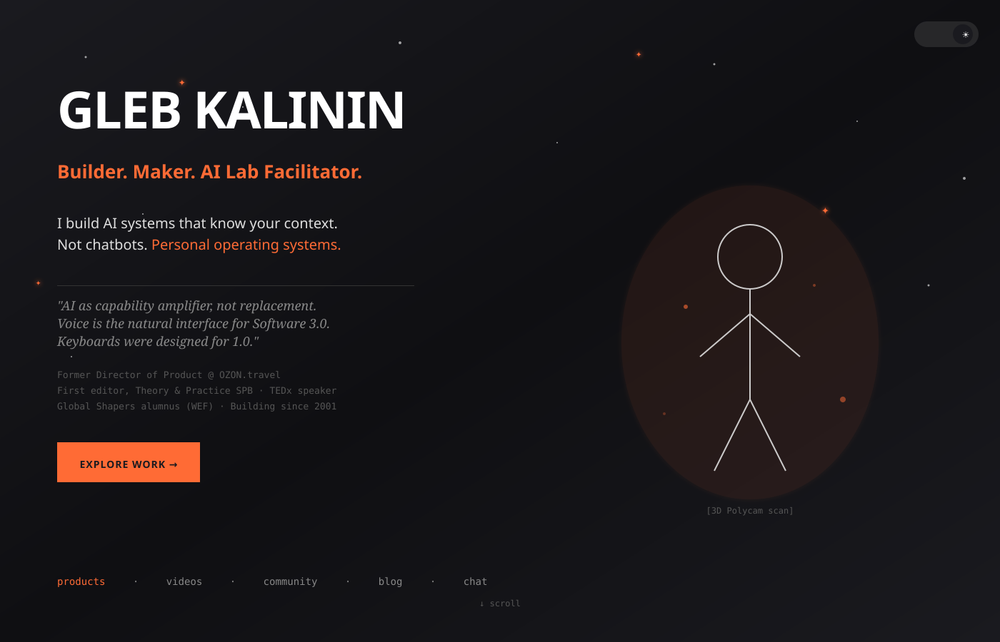
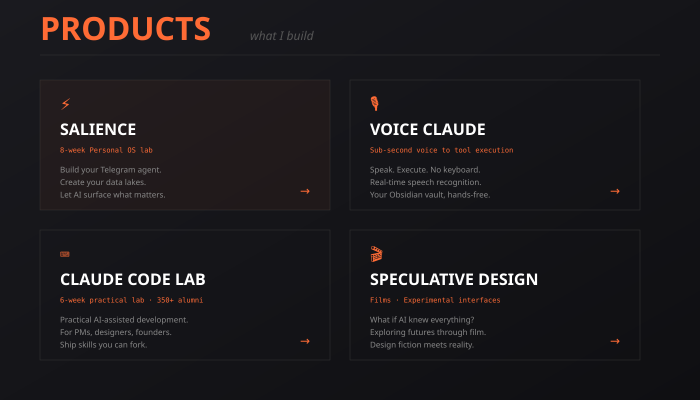
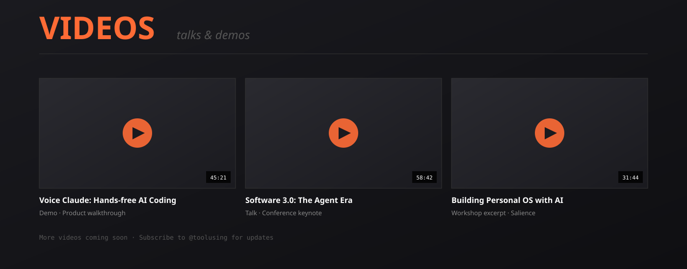
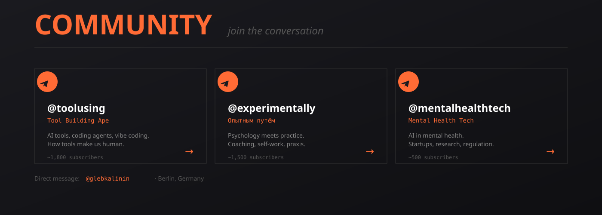
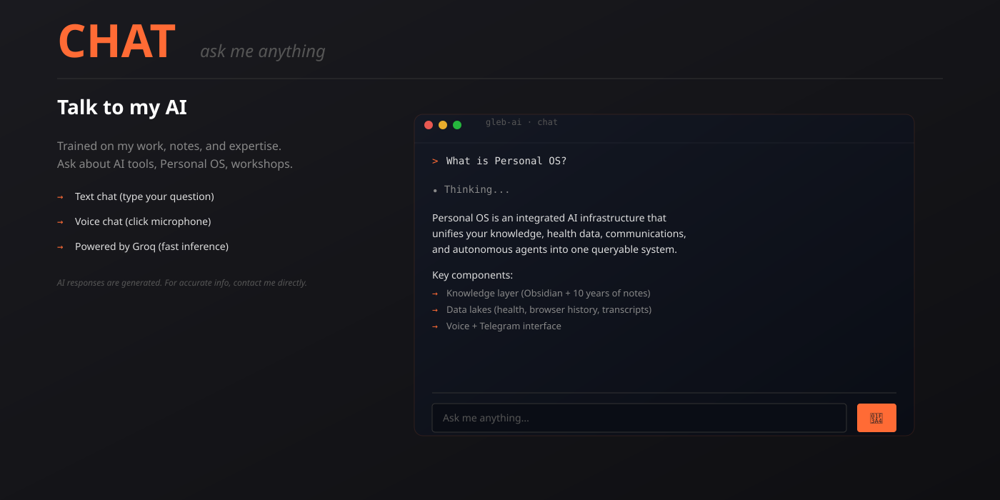

SVG Prototypes - Dark theme, Geist typography, Orange accent

Full viewport hero with 3D Polycam scan placeholder, bold text, stats, CTA

2x2 grid: Salience, Voice Claude, Claude Code Lab, Speculative Design

3x2 grid with filter tabs, YouTube embeds on click

3 Telegram channels: @toolusing, @experimentally, @mentalhealthtech

Terminal-style chat with text + voice input, Groq backend